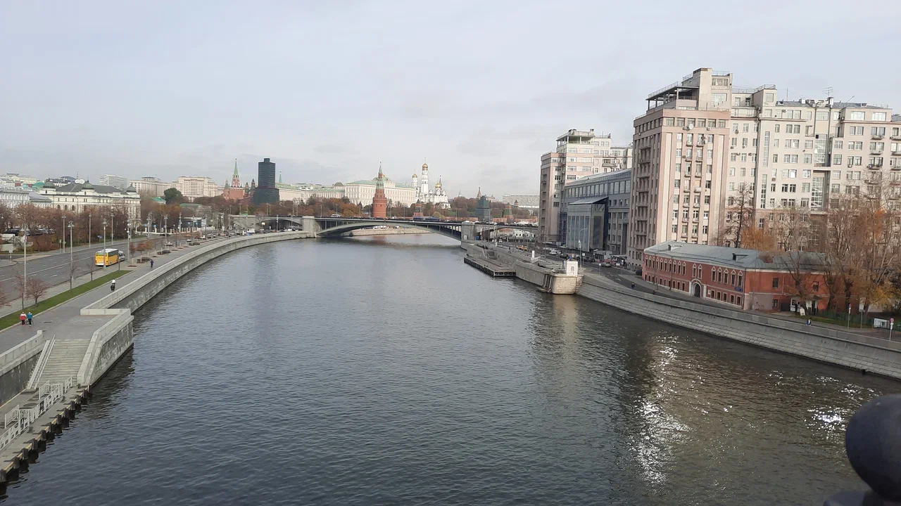

Сканди-мероприятия
-
SCANDI-прогулка " Москва-река - другие берега"
14 июня 2023г. Начало в 19:00
Москва река - другие берега. Обзорно-видовая прогулка по московским набережным от Храма Христа Спасителя до церкви Григория Неокессарийского в Дербицах.
Дом на Набережной, странный доходный дом в Лебяжьем переулке, Голутвинская мануфактура и некремлевские куранты.
Пройдёмся по Пречистенской набережной, Патриаршему мосту и Водоотводному каналу.
Встречаемся в 18.45 у выхода 2 станция метро Кропоткинская.
Закончим около станции метро Полянка.
Что вас ждёт:
📌 Немного разминки и заминки с палками
📌 Немного экскурисии от харизматичного экскурсовода
📌 Много красивых московских видов
Продолжительность 2,5 часа. (в стоимость входит аренда аудиогида)
Экскурсовод Василий Злотников
Инструктор Волосюк Маргарита
(в стоимость входит аренда аудиогида)Стоимость: 1500 при регистрации до 12 июня 2023г.
Стоимость: 1800 при регистрации в течение 12-14 июня 2023г.
ЗаписатьсяПодробнее -
SCANDI-экскурсия "Страсти на Патриарших"
20 июня 2023г. Начало в 19:00
Некогда тихие переулки Козихи, а теперь самый богемный район столицы. Как так получилось? Патрики мало кого оставляют равнодушными: они скрыты от шумной Москвы большими домами. Здесь что ни дом, то легенда. Или дом с жильцом-легендой.
Мы заглянем в переулки и рассмотрим поближе городские детали. Увидим знаменитые шедевры архитектора Федора Шехтеля, дом со львами и настоящее итальянское палаццо.
Но главное, мы поговорим о поэтах и писателях и других творческих людях, которые связаны с этим районом. Как они любили, страдали и создавали нечто прекрасное. И сгорали порой, раньше положенного.
Место встречи: у памятника Маяковскому на Триумфальной площади (метро Маяковская, выход 4)
👣Маршрут: Триумфальная площадь-Садовое кольцо-Малая Бронная – Ермолаевский переулок- Большой Патриарший переулок- Спиридоновка-Спиридоньевский переулок- Трехпрудный переулок-Большой Козихинский переулок – Малая Никитская улица
Окончание: церковь Большое Вознесение у Никитский ворот.
Продолжительность 2,5 часа.
Экскурсовод Блинова Елизавета
Инструктор Волосюк Маргарита
В программе: сканди-разминка и заминка и увлекательный пешеходный маршрут с рассказом очень интересного экскурсовода.
Стоимость: 1500 при регистрации до 18 июня 2023г.
Стоимость: 1800 при регистрации в течение 18-20 июня 2023г.
Записаться Подробнее
Подробнее